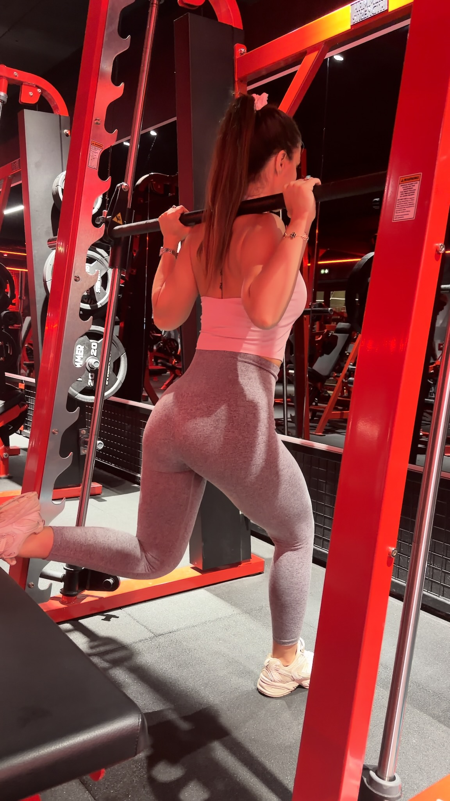
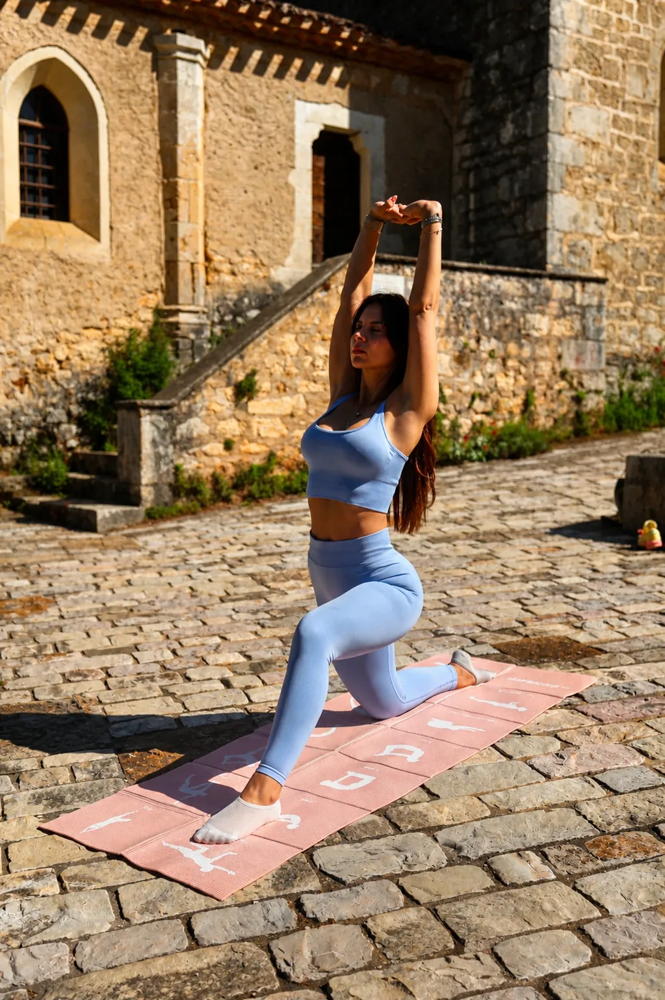
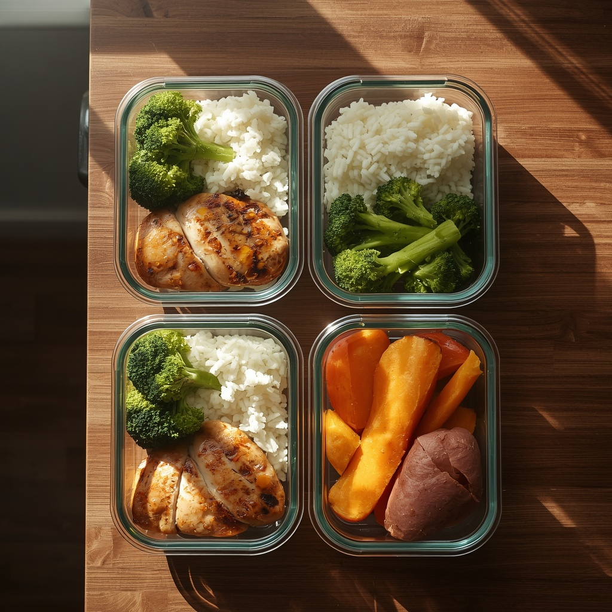

Si tu es ici, tu as probablement déjà essayé des programmes de sport, des débuts d'alimentation équilibrée, une bonne résolution qui a tenu deux semaines. Le problème n'est probablement pas que tu ne sais pas quoi faire. C'est que ta vie — ton travail, tes enfants, ta fatigue, tes imprévus — n'a jamais été prise en compte dans le plan qu'on t'a donné.

Ce n'est pas toujours un problème de motivation. Ça peut être :
Ces 28 jours servent à construire une méthode durable — pas à tenir 28 jours parfaits. Ce programme n'est pas là pour te faire vivre parfaitement pendant 28 jours. Il est là pour t'apprendre à gérer ta vraie vie : les semaines normales, les semaines chargées, les imprévus, les repas à l'extérieur, les vacances, les périodes de fatigue et les jours où tu n'as aucune motivation.
C'est un système simple pour apprendre à intégrer le sport et l'alimentation dans une vraie vie — la tienne, pas une vie idéale qui n'existe pas.
3 séances par semaine, réparties sur 4 semaines. Chaque séance existe en 3 formats — tu choisis selon ton temps du jour, pas selon un idéal.

Échauffement (5 min) : montées de genoux, cercles de hanches, 10 squats à vide, 10 fentes marchées.
| Exercice | Repos |
|---|---|
| Squats | 45-60s |
| Fentes avant alternées | 45-60s |
| Hip thrust (sol ou banc) | 45-60s |
| Pont fessier unilatéral (par jambe) | 30-45s |
| Squat sumo | 45s |
| Gainage latéral (bonus 45 min, fixe) | 30s |
Échauffement (5 min) : rotations d'épaules, cercles de bras, 5 pompes sur genoux.
| Exercice | Repos |
|---|---|
| Pompes (genoux ou classiques) | 45-60s |
| Rowing (élastique/bouteilles) | 45-60s |
| Développé épaules léger | 45s |
| Gainage ventral (planche) | 30-45s |
| Superman (dos) | 30s |
| Mountain climbers (bonus 45 min, fixe) | 30s |
Échauffement (5 min) : jumping jacks légers, talons-fesses, rotations du tronc.
| Exercice | Repos |
|---|---|
| Squat + poussée bras | 45s |
| Fentes arrière + rotation | 45s |
| Gainage + extension jambe | 30-45s |
| Jumping jacks (cardio léger) | 30s |
| Mountain climbers lents (bonus 45 min, fixe) | 30s |
| Étirements complets | — |
Tu as moins de temps ? Tu adaptes la séance. Tu ne supprimes pas automatiquement ta semaine.
| Séance | Si tu as 20 min, garde | Si tu es débutante |
|---|---|---|
| A — Bas du corps | Squats, fentes avant, hip thrust | Squats appuyée sur une chaise, fentes avec amplitude réduite |
| B — Haut du corps | Pompes, rowing, gainage ventral | Pompes sur les genoux, planche réduite à 15s |
| C — Full body | Squat + poussée bras, fentes arrière, gainage | Fentes sans rotation, jumping jacks remplacés par du sur-place |
Cette progression est déjà intégrée directement dans les tableaux de chaque semaine (Semaine 1 à 4 ci-dessous) — tu n'as rien à calculer. Ce tableau t'explique juste la logique globale.
| Semaine | Séries × Reps | Note |
|---|---|---|
| 1 — Installer | 2 × 12 | Focus technique, pas de vitesse |
| 2 — Rythme | 3 × 12 | Même technique, un tour de plus |
| 3 — S'adapter | 3 × 15 | Tempo contrôlé (3s descente) |
| 4 — Autonomie | 3-4 × 15-20 | Ajoute le finisher bonus si tu es à l'aise |
| Format | Contenu |
|---|---|
| 20 min | Échauffement 3 min + 4 premiers exercices × 2 séries |
| 30 min | Échauffement 5 min + les 5 exercices principaux × séries de la grille + 2 min retour au calme |
| 45 min | Version 30 min + exercice bonus + 5 min d'étirements complets |
Pourquoi préparer à l'avance : ce n'est pas pour manger la même chose 7 jours de suite. C'est pour ne jamais te retrouver à 20h, fatiguée, sans solution — le moment exact où le tout-ou-rien prend le dessus.

Combien de temps y consacrer : 45 minutes à 1h, une fois par semaine. Pas plus — sinon tu abandonnes après 2 semaines.
Choisis 2 protéines, 2 féculents, 3 légumes et 1 à 2 sauces. Cuis-les en une seule session, puis combine-les différemment chaque jour.
| Jour | Organisation |
|---|---|
| Dimanche | Préparation des bases : 2 protéines (ex. poulet, œufs durs), 2 féculents (riz, patate douce), 3 légumes (brocolis, poivrons, courgettes), 1 sauce maison |
| Lundi | Repas A : poulet + riz + brocolis + sauce |
| Mardi | Repas B : œufs durs + patate douce + poivrons |
| Mercredi | Combinaison différente : poulet + patate douce + courgettes + sauce |
| Jeudi | Repas rapide avec les restes, assemblés en 5 minutes |
| Temps | Action |
|---|---|
| 0-10 min | Lancer la cuisson des féculents (riz, patate douce au four) |
| 10-25 min | Cuisson des protéines (four ou poêle) |
| 25-35 min | Légumes vapeur ou poêlés |
| 35-45 min | Répartition dans les contenants + préparation des sauces/assaisonnements |
Pour les semaines chargées, quand même 45 minutes semblent impossibles.
| Temps | Action |
|---|---|
| 0-5 min | Protéine rapide : œufs à la poêle, thon en boîte, ou reste de viande/poisson |
| 5-15 min | Féculent précuit (riz/pâtes du commerce) + légumes surgelés au micro-ondes |
| 15-20 min | Assemblage dans les contenants, un filet d'huile d'olive et c'est prêt |
| Catégorie | Exemples |
|---|---|
| Protéines | Poulet, œufs, thon, yaourt grec, tofu, jambon blanc, poisson blanc |
| Glucides / féculents | Riz, pâtes complètes, patate douce, flocons d'avoine, pain complet |
| Légumes | Brocolis, courgettes, poivrons, épinards, carottes, légumes surgelés |
| Fruits | Pommes, bananes, fruits rouges (frais ou surgelés) |
| Matières grasses | Huile d'olive, avocat, oléagineux (amandes, noix) |
| Laitages / alternatives | Yaourt nature, fromage blanc, lait ou boisson végétale |
| Petits-déjeuners | Flocons d'avoine, œufs, pain complet, fruits |
| Collations | Oléagineux, fruits, yaourt, barres protéinées simples |
| Aliments de secours | Conserves (thon, haricots), riz précuit, soupes, légumes surgelés |
Poulet ou œufs · riz précuit · légumes surgelés · yaourt grec · fruits · flocons d'avoine · huile d'olive · pain complet · conserve de thon · amandes.
Des produits longue conservation ou surgelés, pour ne jamais te retrouver sans solution : œufs, conserves de thon ou haricots, riz ou pâtes précuits, légumes surgelés (nature, sans sauce), pain de mie ou wraps au congélateur, fromage râpé, huile d'olive, épices de base.
Garde toujours dans tes placards/congélateur de quoi faire au moins 2 repas complets sans sortir faire de courses : 2 conserves de protéine, 1 paquet de féculent précuit, 1 sachet de légumes surgelés, 1 sauce ou assaisonnement que tu aimes. Ce stock n'est pas destiné au quotidien — il est là pour les jours où tu n'as rien prévu.
| Situation | Idée concrète |
|---|---|
| 5 minutes | Œufs brouillés + pain complet + fruit, ou yaourt grec + flocons d'avoine + fruits |
| 10 minutes | Poêlée thon/riz précuit/légumes surgelés |
| Sans cuisson | Yaourt grec + granola + fruits, wrap froid poulet/crudités, salade thon/maïs/œuf dur |
| Bureau | Salade composée du commerce + source de protéine ajoutée (œuf dur, thon, poulet) |
| À emporter | Sandwich pain complet, poulet, crudités |
| Supermarché | Poulet rôti + salade en sachet + riz précuit |
| Restaurant rapide | Choisis le moins pire : kebab sans sauce + salade, sushis, poke bowl |
PROTÉINE + FÉCULENT/GLUCIDE + LÉGUMES/FRUITS + MATIÈRE GRASSE
C'est une base, pas un menu obligatoire identique pour tout le monde. Adapte les quantités et les aliments à tes goûts et à ton objectif — ce n'est pas un régime strict.
Pas de menu rigide à suivre — juste des exemples pour t'aider à composer selon ta situation du moment.
| Moment | Exemple |
|---|---|
| Petit-déjeuner rapide | Yaourt grec + flocons d'avoine + fruit |
| Petit-déjeuner préparé | Œufs + pain complet + avocat |
| Déjeuner au travail | Contenant meal prep de la veille, réchauffé |
| Déjeuner à la maison | Protéine fraîche + féculent + légumes du moment |
| Dîner familial | Un plat commun, tu ajustes tes proportions sans faire un repas à part |
| Dîner rapide | Œufs ou conserve + légumes surgelés, prêt en 10 minutes |
3 séances + organisation alimentaire normale.
2 séances courtes (20 min) + alimentation simplifiée (repas de secours autorisés).
1 séance courte + marche/mouvement + repas simples. On ne vise rien de plus.
Motivation : une émotion, elle va et vient. Discipline : agir même sans motivation. Habitude : agir sans y penser. Organisation : ce qui rend l'habitude possible dans ta vie réelle.
| Durée de l'arrêt | Comment reprendre |
|---|---|
| 3 jours | Reprends ta prochaine séance prévue, normalement, au format prévu. Rien à changer. |
| 1 semaine | Reprends en Plan B (2 séances courtes) cette semaine-là, puis reviens au Plan A la semaine suivante. |
| 1 mois ou plus | Reprends à la Semaine 1 du programme sportif (progression la plus douce), même si tu avais dépassé ce niveau avant. Ton corps a besoin de ce palier, ce n'est pas repartir à zéro. |
Objectif : maintenir quelques habitudes, pas chercher la perfection en vacances.
| Situation | Que faire |
|---|---|
| Je travaille énormément | Passe en Plan B : 2 séances de 20 min suffisent |
| Mon enfant est malade | Passe en Plan C : marche ou rien, reprends la semaine suivante |
| Je suis en déplacement | Une séance de 20 min sans matériel, où que tu sois |
| Je dors mal | Réduis l'intensité, privilégie marche et mobilité cette semaine-là |
| Je n'ai aucune énergie | Marche légère ou repos actif. Fais une séance de 20 min seulement si l'envie vient en cours de route, sinon Plan C |
| Je n'ai pas le temps de cuisiner | Repas de secours + liste express, aucune honte à ça |
| Je n'ai pas accès à une salle | Toutes les séances du programme se font sans matériel |
Le poids ou les mensurations ne sont qu'un indicateur parmi d'autres — ton énergie, ton sommeil et ta régularité comptent tout autant.
Tu n'as pas besoin de recommencer FIT DANS TA VIE. Tu sais maintenant :
Tu sais maintenant comment organiser une routine. La prochaine étape, si tu veux aller plus loin, est de construire cette routine autour de TON objectif, TON niveau, TES contraintes et TON corps.
Aller plus loin
Un programme 100% sur-mesure
FIT DANS TA VIE t'a appris à organiser ta routine. Le sur-mesure adapte maintenant l'entraînement à TON objectif, TON niveau et TES contraintes précises.
Découvrir le sur-mesure — 79€ →
Restaurant, apéro, week-end : comment gérer ?
Ce qu'on ne fait jamais ici
Au repas suivant, tu reprends normalement. C'est tout.